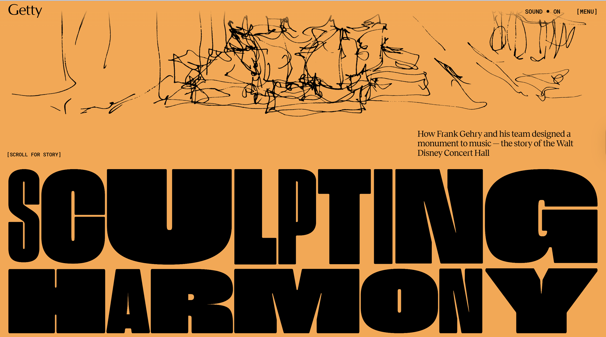
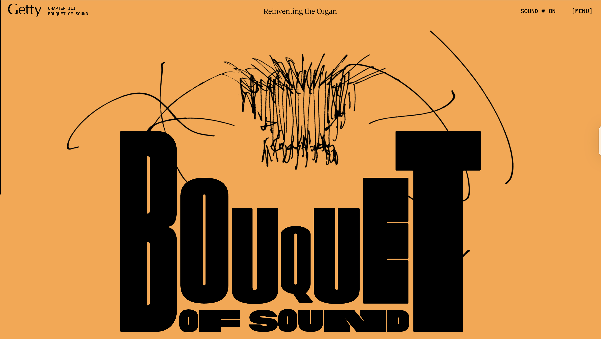

Selected Project: Gehry Getty
URL: Gehry Getty
First Attention
The first thing that stood out was the large, interactive 3D model of the Getty Centre, which was the main feature of the experience. The model’s dynamic lighting and shading gave it a realistic, almost tangible appearance. The subtle motion of the model and its responsiveness to mouse movements immediately drew my attention. Additionally, the dark background with high-contrast white and orange text made the experience feel sleek and modern.
Discrete Actions
- Hovered over the 3D model, noticing how it responded to movement.
- Rotated the model by clicking and dragging.
- Zoomed in and out using the scroll wheel to examine details up close.
- Clicked on different sections of the model, which highlighted specific buildings or architectural elements.
- Read pop-up text boxes that appeared after clicking on different areas.
- Switched between different views to explore various aspects of the design.
- Scrolled through informational sections to read about Gehry’s architectural vision.
- Clicked on the navigation menu to see other available sections of the site.
- Watched embedded media (images and animations) explaining aspects of the design process.
- Tried to zoom in further, but found some limits in how close I could get.
Most Engaging Part
I spent the most time interacting with the 3D model, rotating it, zooming in, and clicking on different sections. The ability to explore the textures, materials, and forms of the Getty Centre in such an immersive way made this the most engaging part. The model itself is beautifully designed, with lighting effects that highlight depth and curvature, which encouraged me to keep exploring from different angles.
Most Common Action
The most frequent action was rotating the 3D model to view different perspectives of the Getty Centre. This action felt intuitive and natural, allowing me to engage deeply with the scale and structure of the building. I also frequently zoomed in and out to examine details, such as the way light interacts with surfaces.
Experience Goals
Primary Goal
The primary goal of the Gehry Getty experience is to educate users about Frank Gehry’s architectural design process in an immersive and interactive way. Instead of just reading about the Getty Centre, users can explore it dynamically, much like they would in a real-world visit. The experience aims to make architecture more accessible and engaging by letting users interact with the space rather than passively consuming information.
Communication of Goal
The 3D model and interactive controls clearly communicate that the goal is to explore the architecture in depth. Clickable elements and interactive prompts guide users to specific architectural details. Minimal distractions in the UI keep the focus on the architecture. Smooth transitions and hover effects make interactions feel natural. Use of storytelling techniques, such as step-by-step explanations of Gehry’s design philosophy, enhances the educational aspect.
Interaction Over Time
Expected Interaction Duration
This experience is designed for short but repeated visits. A user may initially explore the 3D model, then return later to dive deeper into specific sections. The way the content is structured encourages exploration at one’s own pace, rather than consuming everything in a single session. It also has a timeless quality, meaning it could remain relevant and engaging over months or even years.
Communication of Expected Interaction
The modular layout encourages users to explore different sections independently. The interactive elements don’t demand a linear path, allowing users to return whenever they like. The experience doesn’t overwhelm with excessive information at once, suggesting that users can take their time. The polished, high-quality visuals make it something users would likely revisit out of interest.
Media References
Referenced Media
The experience references digital architectural visualisation and 3D modelling techniques used in architecture and design. It also evokes the feel of museum exhibits and VR tours.
Communication of Actions
The reference suggests that users should interact with the model as an exploration tool, focusing on design details.
Communication of Emotions
Users should feel engaged and curious, discovering the thoughtfulness of the design.
Interaction Evaluation
Most Frustrating Part
Zooming in and out can be slow or imprecise, making it difficult to focus on small details.
Most Satisfying Part
Exploring the textures and materials up close is very rewarding and immersive.
Website Screenshots
Below are some screenshots of the Gehry Getty interactive experience:
 